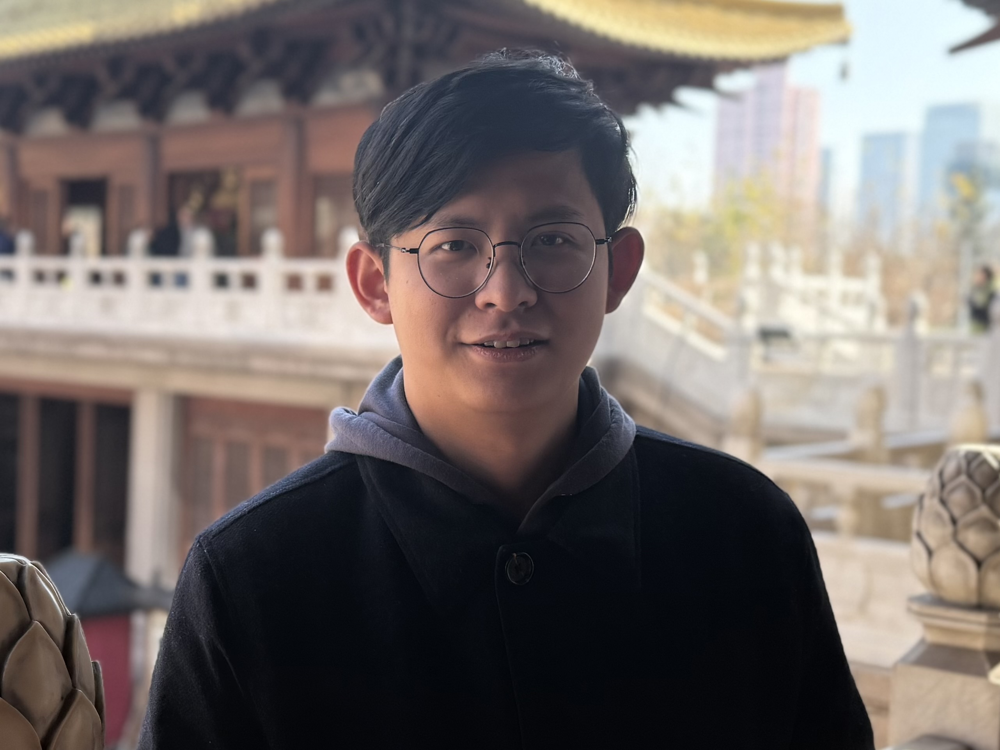
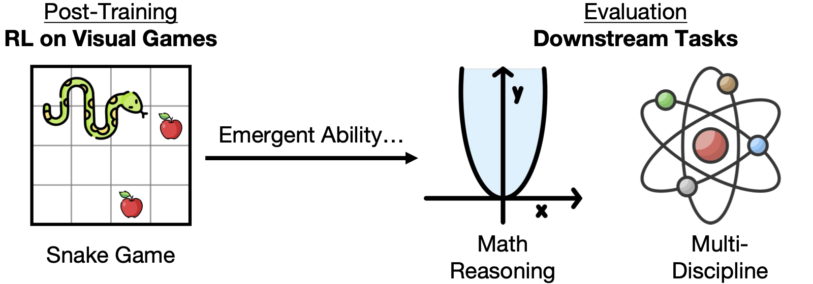
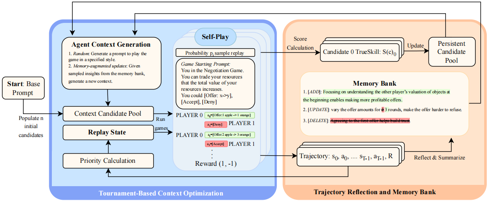
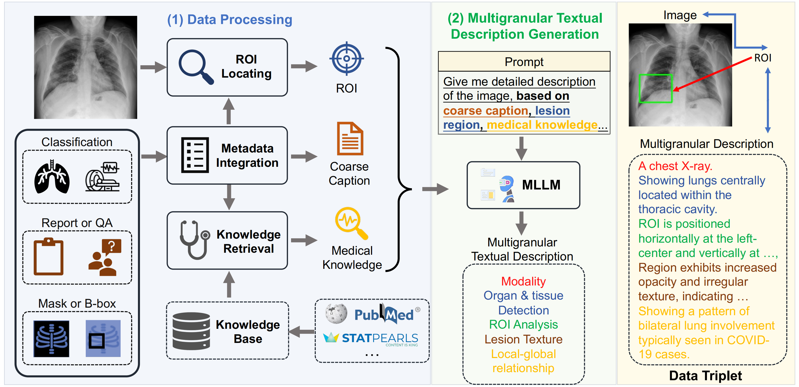
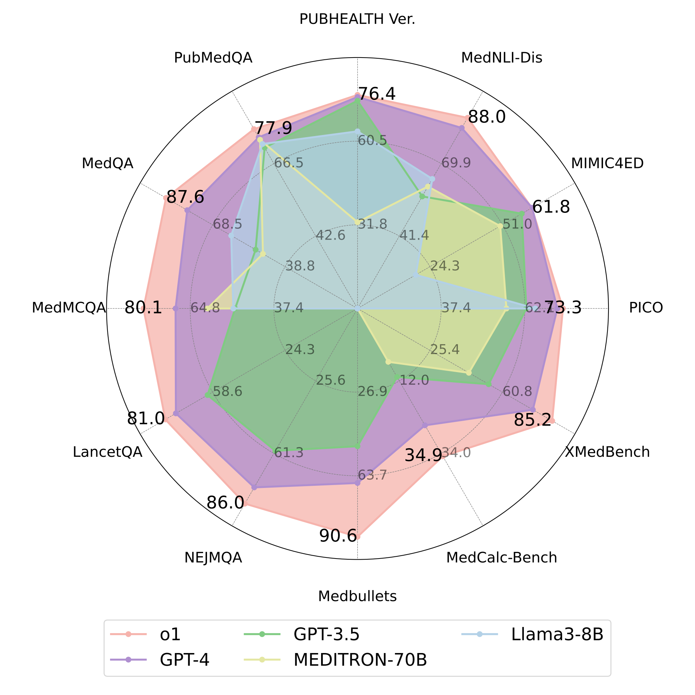
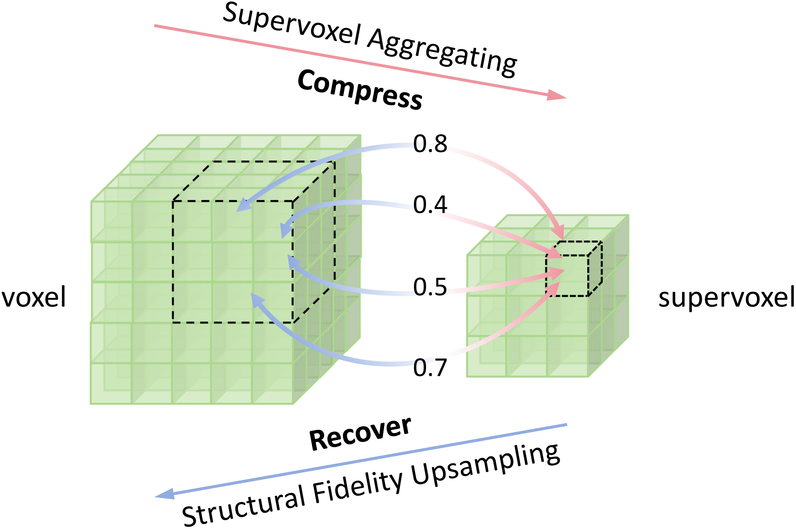
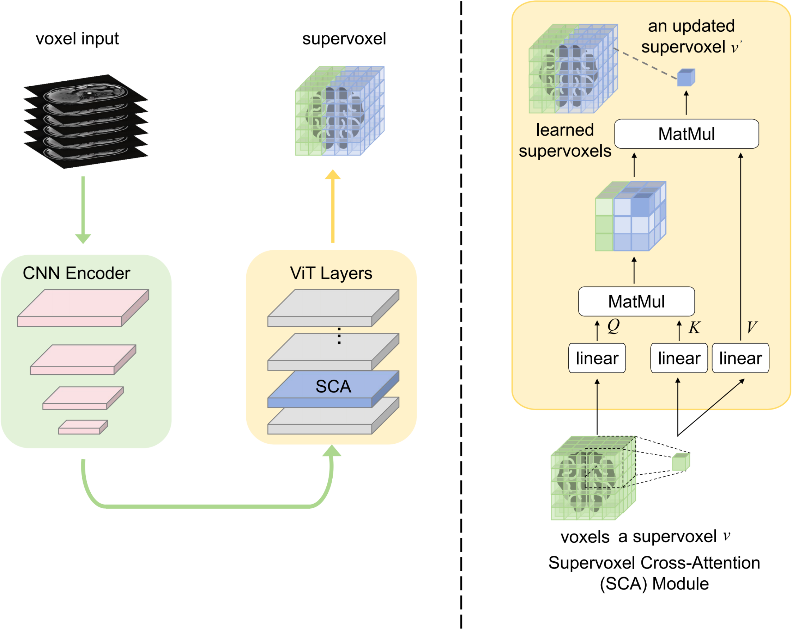

|
Yunfei Xie | 谢云飞 I'm a first-year CS PhD student in the Department of Computer Science at Rice University, advised by Prof. Chen Wei. My current research interests lie in LLM agents and reinforcement learning. Specifically, I am working on LLM post-training data and algorithms for agents. My aim is to develop context learning and reinforcement learning frameworks that enable LLMs to continuously self-improve based on environmental observations, learn from experience, and strengthen their reasoning and agentic capabilities. I completed my bachelor's degree in the School of Artificial Intelligence and Automation at Huazhong University of Science & Technology. During my undergraduate studies, I was honored to work as a research intern with Prof. Yuyin Zhou and Prof. Cihang Xie in VLAA at UC, Santa Cruz, and with Prof. Alan Yuille and Dr.Jieru Mei in CCVL at Johns Hopkins University. I am open for collaborations in research. Also, I am looking for potential intern positions in the summer of 2026. Email / Google Scholar / Github / Twitter / Resume |
 |
{kind=link}
Selected Publications
|

|
Play to Generalize: Learning to Reason Through Game Play
Yunfei Xie, Yinsong Ma, Shiyi Lan, Alan Yuille, Junfei Xiao†, Chen Wei§ ICLR, 2026 paper / website TL;DR: We show that post-training multimodal language models with reinforcement learning on simple arcade games such as Snake improves performance on math and broader reasoning benchmarks, without any exposure to worked solutions, equations, or diagrams during training. |
|

|
MEMO: Memory-Augmented Model Context Optimization for Robust Multi-Turn Multi-Agent LLM Games
Yunfei Xie, Kevin Wang, Bobby Cheng, Jianzhu Yao, Zhizhou Sha, Alexander Duffy, Yihan Xi, Hongyuan Mei, Cheston Tan, Chen Wei, Pramod Viswanath, Zhangyang Wang arxiv, 2025 paper / website TL;DR: We propose MEMO, a self-play framework that optimizes inference-time context through memory retention and exploration, raising mean win rate from 24.9% to 49.5% for GPT-4o-mini across five text-based games while reducing run-to-run variance. |
|

|
MedTrinity-25M: A Large-scale Multimodal Dataset with Multigranular Annotations for Medicine
Yunfei Xie, Ce Zhou, Lang Gao, Juncheng Wu, Xianhang Li, Hong-Yu Zhou, Liu Sheng, Lei Xing, James Zou, Cihang Xie, Yuyin Zhou ICLR, 2025 paper / website TL;DR: We develop a RAG-enhanced automated data synthesis pipeline that generates 25 million high-quality multimodal medical samples with multigranular annotations for vision-language model pretraining. |

|
Story-Adapter: A Training-free Iterative Framework For Long Story Visualization
Jiawei Mao*, Xiaoke Huang*, Yunfei Xie, Yuanqi Chang, Mude Hui, Bingjie Xu, Yuyin Zhou ICLR, 2026 paper / code TL;DR: We proposed a training-free and efficient framework for generating long stories with up to 100 frames. We designed an iterative paradigm that progressively refines the process by integrating text and global constraints, achieving more precise interactions and improved semantic consistency throughout the story. |

|
From Pixels to Objects: A Hierarchical Approach for Part and Object Segmentation Using Local and Global Aggregation
Yunfei Xie, Cihang Xie, Alan Yuille, Jieru Mei ECCV, 2024 paper TL;DR: We developed a hierarchical superpixel-based model that simultaneously addresses two conflicting needs in segmentation: local detail for parts and global context for objects. By employing local aggregation for superpixels in part segmentation and global aggregation for group tokens in object segmentation, we achieved state-of-the-art performance in part and object segmentation. |
|

|
A Preliminary Study of o1 in Medicine: Are We Closer to an AI Doctor?
Yunfei Xie, Juncheng Wu, Haoqin Tu, Siwei Yang, Bingchen Zhao, Yongshuo Zong, Qiao Jin, Cihang Xie, Yuyin Zhou arxiv, 2024 paper / code / data TL;DR: We introduce a comprehensive medical benchmark to evaluate OpenAI o1's clinical capabilities and report preliminary results indicating stronger clinical reasoning, together with known limitations and actionable directions for improvement. |
|

|
Few-shot Medical Image Segmentation via Supervoxel Transformer
Yunfei Xie, Alan Yuille, Cihang Xie, Yuyin Zhou, Jieru Mei arxiv, 2024 paper TL;DR: To address the complexity of 3D medical volume representations, we proposed supervoxels, which are more flexible and semantically meaningful, suitable for 3D organ structures. |
|

|
Brain Tumor Segmentation Through SuperVoxel Transformer
Yunfei Xie, Ce Zhou, Jieru Mei, Xianhang Li, Cihang Xie, Yuyin Zhou ISBI, 2024 paper TL;DR: We developed two CNN-Transformer hybrid models as part of the BraTS-ISBI 2024 challenge to create brain tumor segmentation models with broad applicability. |
Education |
|
|
Undergrad in Artificial Intelligence,
Huazhong University of Science & Technology
2021.09 - Present, Wuhan, China |
Experience |
|
|
Dec. 2023 - Feb. 2025: Research Intern,
VLAA,
University of California, Santa Cruz |
|
|
Jul. 2023 - Dec. 2023: Research Intern,
CCVL,
Johns Hopkins University |
Reviewer |
|
2025: ICCV, ICLR, CVPR, ICML, TMM, NeurIPS, TPAMI |
|
This website template was borrowed from Jon Barron . |